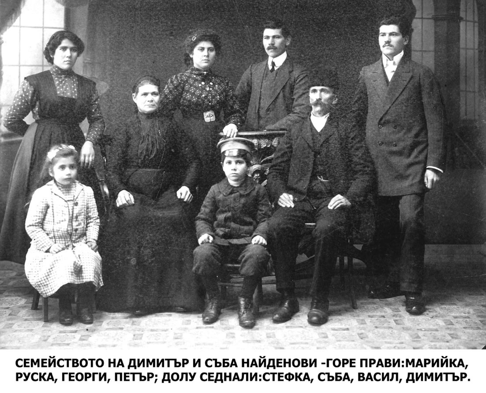
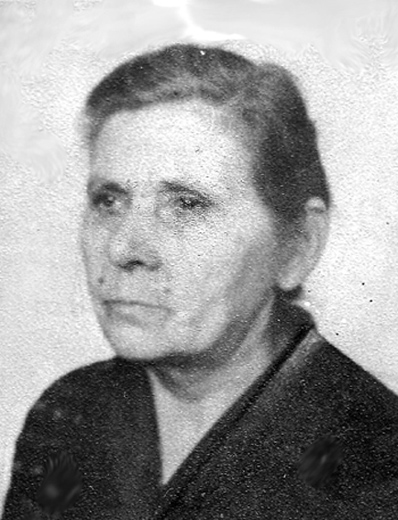
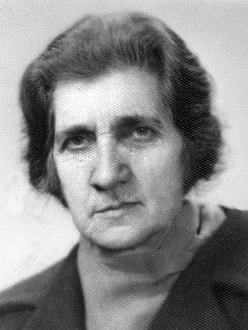

ДЕЦА
По-долу може да видите списък на децата на дядо Митю и баба Съба по ред на раждане, година на смъртта, професия и имена на съпруг/съпруга.
Моля да споделите по-детайлна информация за Ваш родственик, ако разполагате с такава. Ще съм Ви много благодарен. Изпращане на материали Тук може да напишете съобщение: Изпращане на съобщение
ГЕОРГИ ДИМИТРОВ НАЙДЕНОВ

роден - 1886 г. / починал - 1976 г. в СОФИЯ
ПРОФЕСИЯ – АДВОКАТ
РАЙНА – ПЪРВА СЪПРУГА
ЖАНА – ВТОРА СЪПРУГА (СЛЕД СМЪРТТА НА РАЙНА)
ПЕТЪР ДИМИТРОВ НАЙДЕНОВ

род. 17.06.1888 г. / поч. 06.12.1979 г. в БЛАГОЕВГРАД
ПРОФЕСИЯ – МОДEН ШИВАЧ, ГОЛЯМ ТУРИСТ
КАТИНА – ПЪРВА СЪПРУГА
ПЕНКА – ВТОРА СЪПРУГА (СЛЕД СМЪРТТА НА КАТИНА)
РУСКА ДИМИТРОВА МАРИНОВА

род.23.12.1890 г. / поч. 08.04.1979 г. в СОФИЯ
ПРОФЕСИЯ – МОДНА ШИВАЧКА
МАРИН БОЧЕВ МАРИНОВ - СЪПРУГ - род. 29.03.1896 г. / поч. 01.03.1988 г. в СОФИЯ
ПРОФЕСИЯ – МАЙСТОР ЗАНАЯТЧИЯ
{kind=link}
МАРИЙКА ДИМИТРОВА ЛИЧЕВА

род. 16.06.1892 г. / поч. 00.00.1979 г. в СОФИЯ
ПРОФЕСИЯ – МОДНА ШИВАЧКА
НИКОЛА ..... КЪРДЖИЕВ – ПЪРВИ СЪПРУГ
ВЪЛЧО ....... ЛИЧЕВ – ВТОРИ СЪПРУГ (СЛЕД СМЪРТТА НА НИКОЛА)
РАДКА ДИМИТРОВА ГРЪНЧАРОВА

род. 13.11.1894 г. / поч. 25.12.1950 г. в ЛОВЕЧ
ПЕТКО ........ ГРЪНЧАРОВ - СЪПРУГ
ВАСИЛ ДИМИТРОВ НАЙДЕНОВ

род.23.11.1902 г. / поч. 13.04.1981 г. в СОФИЯ
ПРОФЕСИЯ – АГРОНОМ
ВЕРА ....... - СЪПРУГА
ПРОФЕСИЯ – УЧИТЕЛ
СТЕФАНА ДИМИТРОВА ГАСС

род. 20.11.1905 г. / поч. 25.02.1981 г. в ЛОВЕЧ
ПРОФЕСИЯ – УЧИТЕЛ
ГЕОРГИЙ ВЛАДИМИРОВИЧ ГАСС - СЪПРУГ - род. 19.03.1911 г. / поч. 14.09.2000 г. в ЛОВЕЧ
ПРОФЕСИЯ – ВЕТ. ЛЕКАР